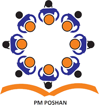
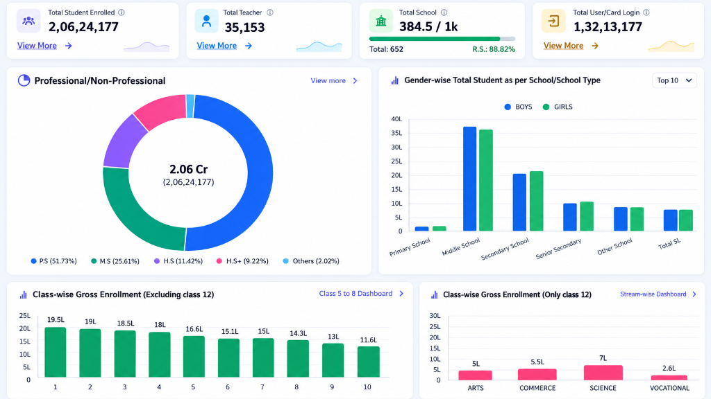

Quick Access Portals
Access government education management systems
Teacher
Teacher Management & Empowerment
Comprehensive portal for teacher attendance, service records, professional development, and merit transfers.
Student
Student Lifecycle & Learning Hub
Unified student registry, attendance tracking, assessment analytics, and digital learning resources.
School
School Infrastructure & Governance
Real-time institutional profiles, classroom facilities, smart ICT labs, sanitation, and geo-spatial cluster mapping.
AI Education Assistant
Smart Learning & Analytics Copilot
Conversational AI diagnostics, automated administrative summaries, student remediation, and instant policy guidance.
Key Educational Modules & Services
Specialized digital platforms and real-time operational monitoring systems powering schools across Bihar
School Information
Overview of school profile, infrastructure, facilities, and academic environment.

Teacher Insights
Teacher workforce, attendance, postings, and staff performance at a glance.

PM POSHAN Tracker
Meal coverage, attendance, kitchen operations, health checks, and daily monitoring.
Learning & Performance
Student achievement, classroom progress, and academic performance trends.
Education KPIs
Key performance indicators across attendance, outcomes, access, and equity metrics.
Today's Insights
Live updates, alerts, and daily operational highlights across schools.

School GeoMap
Location-based view of schools, clusters, and district coverage for planning.
Reports & Analytics
Downloadable dashboards, trend analysis, and decision-ready school reports.
Office & Administration
Administrative workflows, approvals, governance routines, and office operations.

Teacher Development
Training progress, capacity-building plans, and professional growth monitoring.

AI Education Assistant
Smart guidance for school queries, classroom insights, and instant educational recommendations.

Student Engagement
Participation, activity tracking, and student involvement across the school ecosystem.
About Vidya Samiksha Kendra (VSK) Bihar
Vidya Samiksha Kendra in Bihar is a centralized institutional hub dedicated to monitoring, analyzing, and transforming the state's education system across all 38 districts. Functioning as an institutional "Force Multiplier", VSK amplifies existing capabilities by integrating real-time administrative data with AI-driven analytics to empower teachers, administrators, and policy leaders with actionable intelligence.
AI-Driven Predictive Insights
VSK leverages artificial intelligence to analyze real-time data from 75,000+ schools, delivering evidence-based insights and recommendations that enhance decision-making across all levels.
Elevating Educational Outcomes
Delivering personalized learning metrics and diagnostic tracking for students and teachers, driving measurable gains in foundational literacy, numeracy, and academic achievement.
Comprehensive Governance Support
Equipping state, district (DEO), and block (BEO) authorities with unified live dashboards for transparent school governance, attendance tracking, and equitable resource allocation.
Unified Program Integration
Seamlessly integrates flagship state initiatives—including PM POSHAN, HRMIS, PGI, NISHTHA teacher training, and DIKSHA digital resources—into a single actionable pane of glass.

Our Vision
We envision a future where data and technology seamlessly integrate into Bihar's education system, ensuring that every student in Bihar has access to high-quality, equitable, and nurturing schooling. Our goal is to create a transparent, continuously improving educational environment that unleashes the full potential of every learner.
Our Mission
Our mission is to transform the educational landscape of Bihar by harnessing the power of real-time data and AI-driven insights. We empower students, teachers, and administrators with actionable intelligence that fosters personalized learning, elevates teaching effectiveness, and drives systemic improvements at scale.